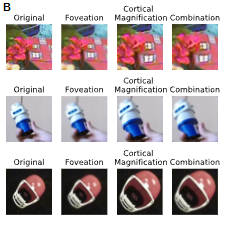
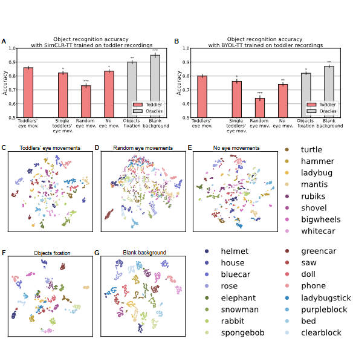
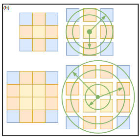
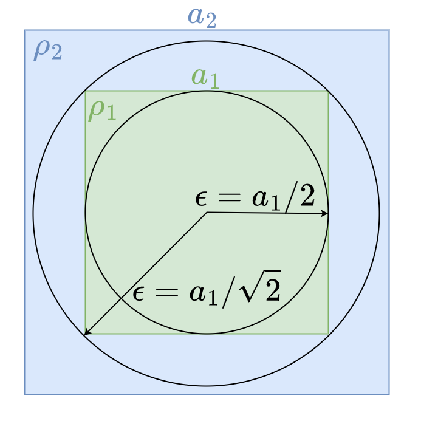
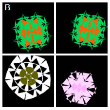
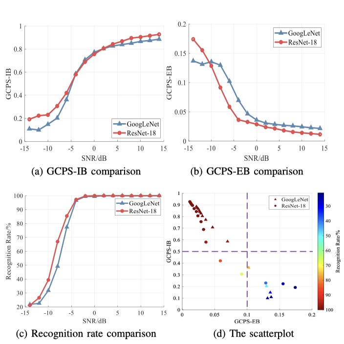
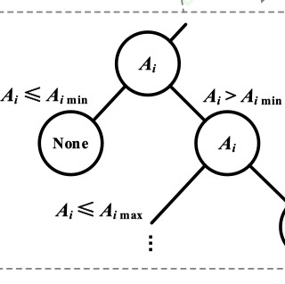
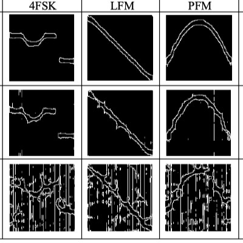
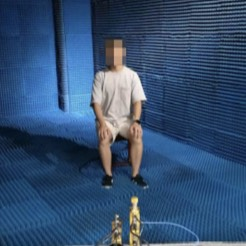

|
Zhengyang Yu I'm a fourth-year PhD student at Frankfurt Institute for Advanced Studies (FIAS), supervised by Prof. Dr. Jochen Triesch. I also collaborate closely with Prof. Chen Yu, and members of Developing Intelligence Lab. Before that, I received my Master’s degree from Xidian University, where I focused on signal processing and pattern recognition. In addition, I completed a short-term internship at Thoughtworks. |
{kind=link}
ResearchMy research interests include self-supervised learning, representation learning, and gaze behavior. I am currently developing more robust self-supervised models inspired by infants’ visual behaviors. I am also interested in multimodal infant data, such as video, audio, EEG, and ECG signals. |
|

|
Simulated Cortical Magnification Supports Self-Supervised Object Learning
Zhengyang Yu, Aubret Arthur, Chen Yu, Jochen Triesch ICDL, 2025 paper Cortical magnification creates a trade-off between enlarging objects and compressing the background, which supports self-supervised object learning. |
|

|
Toddlers' Active Gaze Behavior Supports Self-Supervised Object Learning
Zhengyang Yu, Aubret Arthur, Marcel C. Raabe, Jane Yang, Chen Yu, Jochen Triesch PNAS (under review) paper / code We constructed a series of egocentric toddler gaze datasets and demonstrated, through representation learning, that toddlers' gaze behavior supports self-supervised object learning. |
|

|
Cre: Circle relationship embedding of patches in vision transformer
Zhengyang Yu, Jochen Triesch ESANN, 2023 paper A novel foveation-inspired positional encoding for ViTs that reduces the number of learnable parameters. |
|

|
Saccade amplitude statistics are explained by cortical magnification
Marcel C. Raabe, Francisco M. López, Zhengyang Yu, Spencer Caplan, Chen Yu, Bertram Shi, Jochen Triesch ICDL, 2023 paper We reveal distinct naturalistic saccade patterns and explain them with a cortical magnification–based model. |
|

|
Contrastive learning through time
Felix Schneider, Xia Xu, Markus R Ernst, Zhengyang Yu, Jochen Triesch SVRHM 2021 Workshop@NeurIPS, 2021 paper / code A biologically inspired contrastive learning framework that leverages sequential views instead of arbitrary augmentations to achieve near-supervised object recognition performance. |
|

|
GCPS: A CNN performance evaluation criterion for radar signal intrapulse modulation recognition
Zhengyang Yu, Jianlong Tang, Zhao Wang, IEEE Communications Letters, 2021 paper / code A novel metric for evaluating CNN performance in radar time–frequency spectrogram recognition. |
|

|
Design of lightweight incremental ensemble learning algorithm
Jiahui Ding, Jianlong Tang, Zhengyang Yu, Systems Engineering & Electronics, 2021 paper A lightweight incremental ensemble learning algorithm that integrates new categories without retraining, significantly reducing training costs in noisy emitter classification. |
|

|
Radar signal intra-pulse modulation recognition based on contour extraction
Zhengyang Yu, Jianlong Tang IGARSS, 2020 paper A contour-extraction-based CNN method for radar intra-pulse modulation recognition, which simplifies the network structure and improves accuracy. |
|

|
Life Signal Detection Based on Singular Spectrum Analysis in the Terahertz Band
Yupeng Zhu, Yanpan Hou, Hongying Zhang, Zhengyang Yu CCISP, 2020 paper An SSA-based life signal detection method using 0.33 THz radar, which outperforms EMD under low SNR and shows promise for remote patient monitoring. |
Miscellanea |
Awards Honors |
Xidian Excellent Graduate Student 2021 Xidian Graduate Scholarship 2018,2019,2020 XAUT Excellent Undergraduate Thesis 2018 XAUT National Encouragement Scholarship 2016 Wujiang Eco-Tech Innovation Scholarship 2015 |
Invited Talks |
Toddler Vision and Self-Supervised Object Learning, Cardiff, 2025 (expected) Multimodal Machine Learning to Characterise Early Life Environments, London, 2025 Xidian Huashan Young Scholars Forum, Hybrid, 2025 The interdisciplinary FIGSS Seminar, Frankfurt am Main, 2024 Xidian Huashan Young Scholars Forum, Hybrid, 2024 |
Review Service |
ICLR 2024 ESANN 2023 SVRHM@NeurIPS 2021 IGARSS 2020 IEEE Communications Letters |
|
© Copyright Zhengyang Yu 2025 Design and source code from Jon Barron's website. |